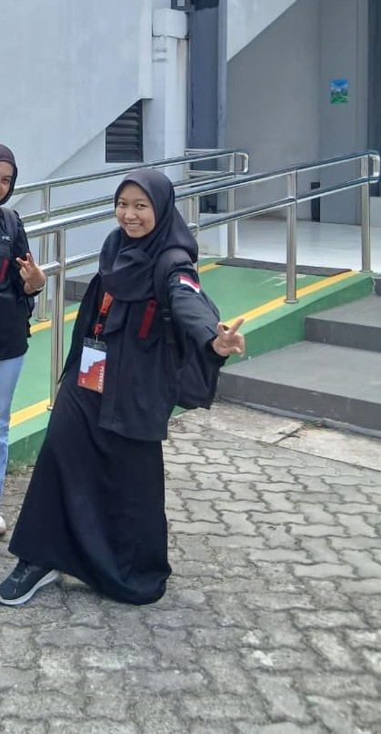
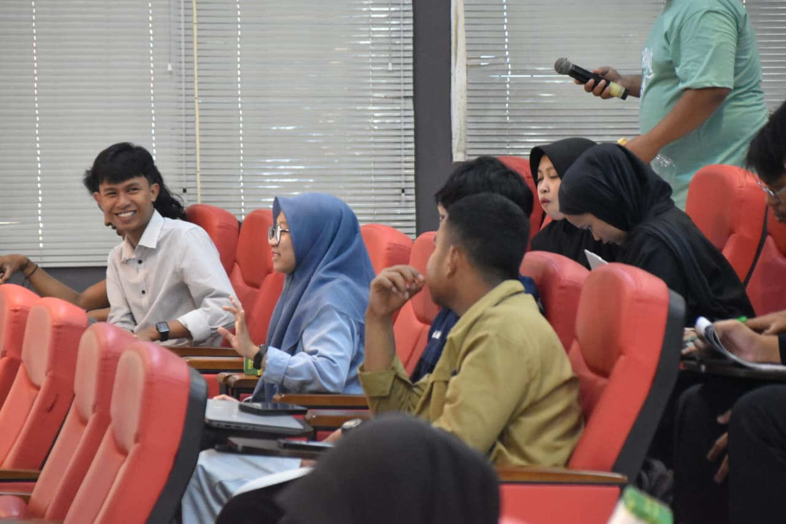

FILE: FIKA_PROFILE.TXT
-----------------------------------------
Identity : Rofiqoh Qurotun Nuraini
NIM : E41252916
Current Class : Informatics Engineering, State Polytechnic of Jember
Department Skill: Canva, Figma, HTML, CSS, JS
Current Mission : Google Student Ambassador 2026
-----------------------------------------
[FUN FACT]
I’d rather sleep than fight for seblak.
I’d rather do revisions than get praised.

[BIOGRAPHY]
Hi there! I'm Fika, an Informatics Engineering student at State Polytechnic of Jember. Combining a tech background with a solid foundation in organizational leadership and creative writing, I am excited to be a Google Student Ambassador 2026.

[HELP]
Do you need something to help?
Don't forget to sholat, Bro
 Ramadan Competition by HMJTI
Ramadan Competition by HMJTI
 Inspirational Ambassador Competition Indonesia
Inspirational Ambassador Competition Indonesia
 National Competition at Ahmad Dahlan University, Yogyakarta
National Competition at Ahmad Dahlan University, Yogyakarta
 Book Review Competition 2025 by Polije Library
Book Review Competition 2025 by Polije Library
 Instagram Feed karsa.nifa
Instagram Feed karsa.nifa
 LKMM Pre-TD Material Summary Feed
LKMM Pre-TD Material Summary Feed
 Instagram Feed karsa.nifa
Instagram Feed karsa.nifa

 Inspirational Essay Competition Feed by Sisterlillah
Inspirational Essay Competition Feed by Sisterlillah
 Freshman Year Wallpaper
Freshman Year Wallpaper
 Casual Wallpaper
Casual Wallpaper
 Casual Wallpaper 2
Casual Wallpaper 2
 Family Photo Phone Wallpaper
Family Photo Phone Wallpaper
 Dream Campus Wallpaper
Dream Campus Wallpaper
 Dream Campus Wallpaper
Dream Campus Wallpaper
 Alumni Fast-Breaking Event Pamphlet
Alumni Fast-Breaking Event Pamphlet
 Life Report (designed with the Event Documentation Team)
Life Report (designed with the Event Documentation Team)
Video Editing & Creative Content Creator Production
File: Teaser_Jember_Book_Party_HD.mp4
Status: Playing from Google Drive
Select Video:
- 1. YOI.AI Video Project
- 2. Library Content
- 3. English Club Event Video
- 4. Scholarship Assignment Video
Validated Milestones & Academic Awards
Fika Organizational & Creative Resource Counter
| Active Organizations: | 0 | |
| Content Writing Projects: | 0 | |
| Yanbu'a Teaching Levels: | 0 | |
| Leadership Modules: | 0 |
Organizational Track Record History
Arts Coordinator OSIM in grade VII to IX (managed magazine editorial, class meetings, and art activities), Head of Al-Quran Assembly.
Head of Arts, Language, and Sports Division.
Led the team, coordinated various work programs, and earned Best Scientific Writing Award.
Informatics Engineering Student at Polije, Networking Division at UKM Explant, Content Writer at Studilanjut.id, SatuHikmah.id & English Club Jember Book Party, 2nd Place at National Website Campus Competition at PCFest 2026.
Hubungkan Jalur Komunikasi
📍 Address: Kaliwates, Jember
📞 Phone: +62 853-8559-4932
📧 Email: isaacbilkaffi@gmail.com
💼 LinkedIn: Rofiqoh Fika
📸 IG Accounts: @qurrotafi / @aiwah_kahfi
Fika_OS [Version 1998.06.09]
(c) Informatics Architecture Department. Authorized Eyes Only.
C:\FIKA\SKILLS> cat technical_stack.json
| • Front-End: | HTML5, CSS3, Modern JavaScript |
| • Prototyping: | UI/UX Design Wireframing via Figma |
| • Multimedia: | Canva Pro & CapCut Video Engine |
| • Networking: | UKM Explant Operational Division |
C:\FIKA\SKILLS> _
⚠️ TERMINAL ACCESS GRANTED
Windows
An exception 0E has occurred at 0028:C0011A2B in VxD GSA_2026_SELECTION.
The system was put into a forced hibernation state because Fika went to sleep to avoid a seblak war.
* Click anywhere on the screen to awake the candidate and reboot Fika OS.
* You will not lose any important recruitment score data.
Press anywhere to continue _
Hi! I'm Fika. Click the folders on desktop or open Start menu to explore my mini blog!